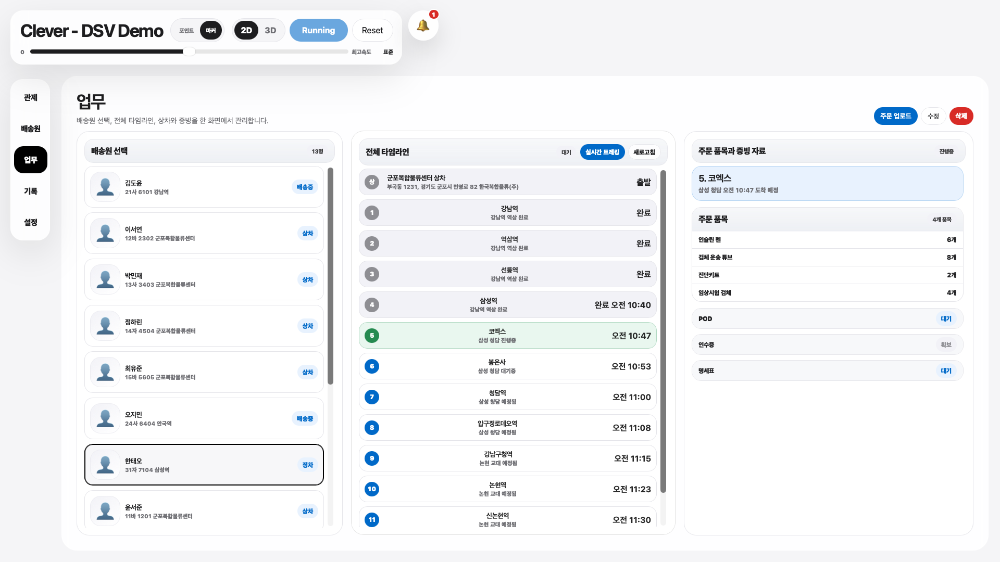
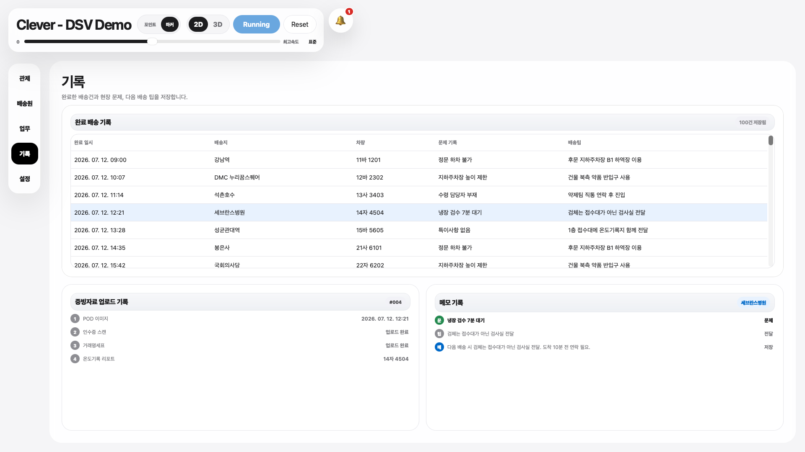
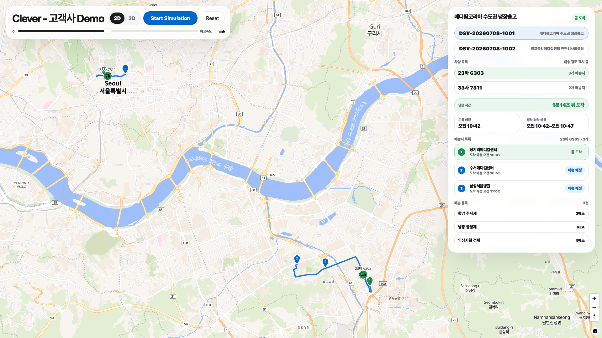

배송 운영을
하나의 흐름으로.
관제, 배차 업무, 현장 기록과 고객사 배송 조회를 같은 배송 데이터로 연결하는 운영 화면입니다.
01 / CONTROL
차량과 배송 경로를
한눈에 관제합니다.
운행 차량, 완료 구간, 현재 배송지와 다음 목적지를 함께 확인합니다. 차량 선택과 동시에 경로와 배송 순서가 연결됩니다.
02 / OPERATIONS
배차부터 증빙까지
업무를 이어봅니다.
배송원, 전체 타임라인, 주문 품목과 증빙 자료를 한 화면에 배치해 다음 업무를 빠르게 판단합니다.

03 / RECORDS
현장의 맥락을
배송 기록으로 남깁니다.
완료 시각, 문제 기록과 현장 팁을 POD, 인수증, 거래명세표, 온도 기록과 함께 추적합니다.

04 / CUSTOMER VIEW
고객사는 주문별로
도착을 확인합니다.
주문, 배정 차량, 배송지 순서, 남은 시간과 도착 예정 범위를 확인하며 다중 차량 주문도 하나의 흐름으로 봅니다.
